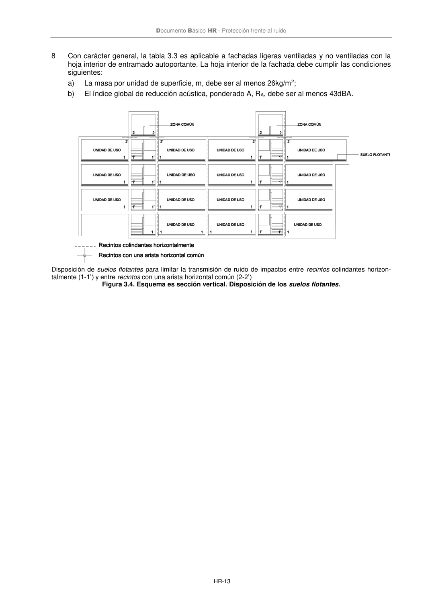
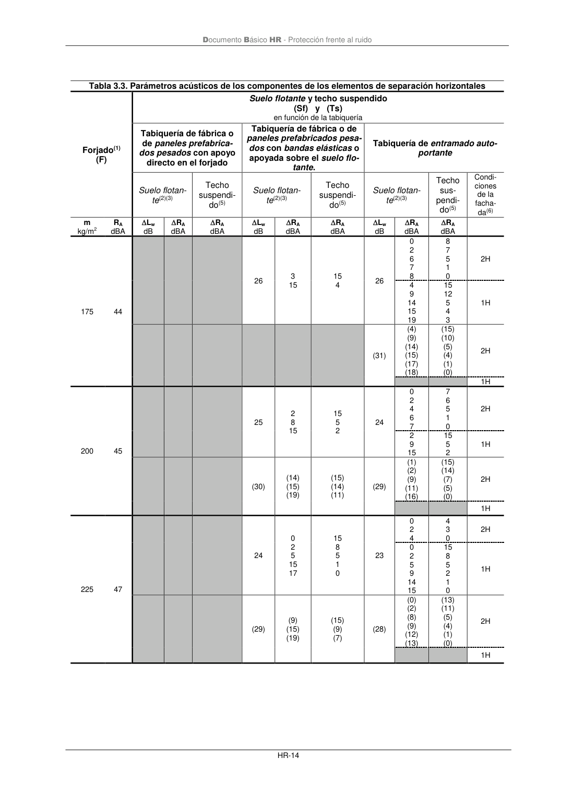
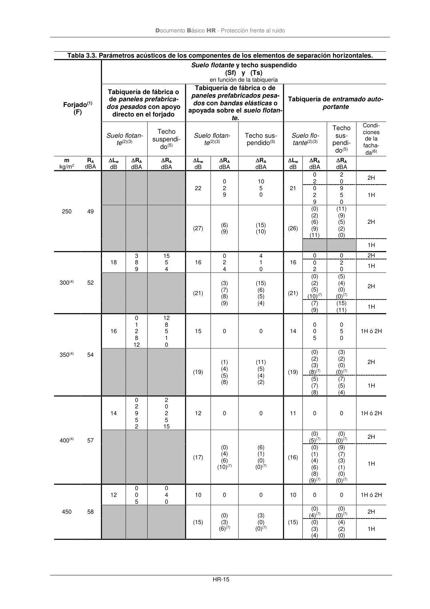
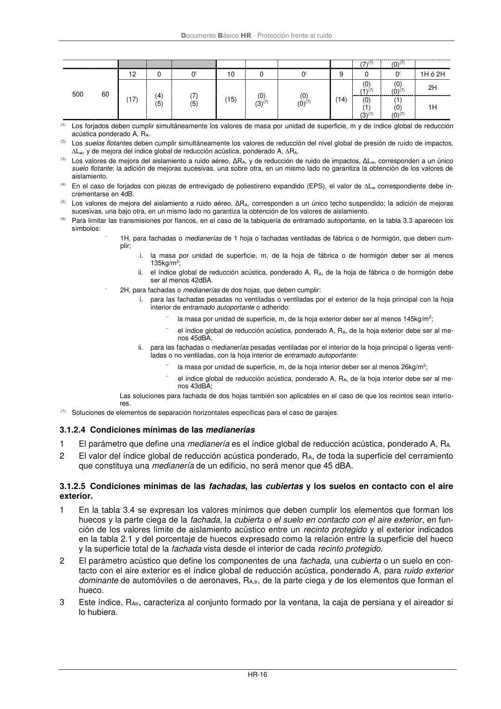

DB-HR · 3.1.2.3.5 Condiciones mínimas de los elementos de separación horizontales · versión 2019-12-20 · capa oficial
Formatos: JSON compacto · Markdown · PDF fuente
Ámbito del documento · texto del ámbito · documento y tablas
ID técnico a0044 · PDF pág. 18-22 · jerarquía no validada por persona · contrastado con el literal de la página 18 (candidato tipográfico); no validado por persona · padre: a0043
3.1.2.3.5 Condiciones mínimas de los elementos de separación horizontales 1 En la tabla 3.3 se expresan los valores mínimos que debe cumplir cada uno de los parámetros acústicos que definen los elementos de separación horizontales. 2 Los forjados que delimitan superiormente una unidad de uso deben disponer de un suelo flotante y, en su caso, de un techo suspendido con los que se cumplan los valores de mejora del índice global de reducción acústica, ponderado A, RA y de reducción del nivel global de presión de ruido de im- pactos, Lw especificados en la tabla 3.3. 3 Los forjados que delimitan inferiormente una unidad de uso y la separan de cualquier otro recinto del edificio deben disponer de una combinación de suelo flotante y techo suspendido con los que se cumplan los valores de mejora del índice global de reducción acústica, ponderado A, RA. 4 Además, para limitar la transmisión de ruido de impactos, en el forjado de cualquier recinto colin- dante horizontalmente con un recinto perteneciente a unidad de uso o con una arista horizontal co- mún con el mismo, debe disponerse un suelo flotante cuya reducción del nivel global de presión de ruido de impactos, Lw, sea la especificada en la tabla 3.3. (Véase figura 3.4). De la misma manera, en el forjado de cualquier recinto de instalaciones o de actividad que sea colindante horizontalmente con un recinto protegido o habitable del edificio o con una arista horizontal común con los mismos, debe disponerse de un suelo flotante cuya reducción del nivel global de presión de ruido de impac- tos, Lw, sea la especificada en la tabla 3.3. 5 En el caso de que una unidad de uso no tuviera tabiquería interior, como por ejemplo un aula, pue- de elegirse cualquier elemento de separación horizontal de la tabla 3.3. 6 Entre paréntesis figuran los valores que deben cumplir los elementos de separación horizontales entre un recinto protegido o habitable y un recinto de instalaciones o de actividad. 7 Además de lo especificado en las tablas, los techos suspendidos de los recintos de instalaciones deben instalarse con amortiguadores que eviten la transmisión de las bajas frecuencias (preferible- mente de acero). Asimismo los suelos flotantes instalados en recintos de instalaciones, pueden con- tar con un material aislante a ruido de impactos, con amortiguadores o con una combinación de ambos de manera que evite la transmisión de las bajas frecuencias. Documento Básico HR - Protección frente al ruido HR-13 8 Con carácter general, la tabla 3.3 es aplicable a fachadas ligeras ventiladas y no ventiladas con la hoja interior de entramado autoportante. La hoja interior de la fachada debe cumplir las condiciones siguientes: a) La masa por unidad de superficie, m, debe ser al menos 26kg/m2; b) El índice global de reducción acústica, ponderado A, RA, debe ser al menos 43dBA. Disposición de suelos flotantes para limitar la transmisión de ruido de impactos entre recintos colindantes horizon- talmente (1-1’) y entre recintos con una arista horizontal común (2-2’) Figura 3.4. Esquema es sección vertical. Disposición de los suelos flotantes. Documento Básico HR - Protección frente al ruido HR-14 Tabla 3.3. Parámetros acústicos de los componentes de los elementos de separación horizontales Forjado(1) (F) Suelo flotante y techo suspendido (Sf) y (Ts) en función de la tabiquería Tabiquería de fábrica o de paneles prefabrica- dos pesados con apoyo directo en el forjado Tabiquería de fábrica o de paneles prefabricados pesa- dos con bandas elásticas o apoyada sobre el suelo flo- tante. Tabiquería de entramado auto- portante Suelo flotan- te(2)(3) Techo suspendi- do(5) Suelo flotan- te(2)(3) Techo suspendi- do(5) Suelo flotan- te(2)(3) Techo sus- pendi- do(5) Condi- ciones de la facha- da(6) m kg/m2 RA dBA Lw dB RA dBA RA dBA Lw dB RA dBA RA dBA Lw dB RA dBA RA dBA 175 44 26 3 15 15 4 26 0 2 6 7 8 8 7 5 1 0 2H 4 9 14 15 19 15 12 5 4 3 1H (31) (4) (9) (14) (15) (17) (18) (15) (10) (5) (4) (1) (0) 2H 1H 200 45 25 2 8 15 15 5 2 24 0 2 4 6 7 7 6 5 1 0 2H 2 9 15 15 5 2 1H (30) (14) (15) (19) (15) (14) (11) (29) (1) (2) (9) (11) (16) (15) (14) (7) (5) (0) 2H 1H 225 47 24 0 2 5 15 17 15 8 5 1 0 23 0 2 4 4 3 0 2H 0 2 5 9 14 15 15 8 5 2 1 0 1H (29) (9) (15) (19) (15) (9) (7) (28) (0) (2) (8) (9) (12) (13) (13) (11) (5) (4) (1) (0) 2H 1H Documento Básico HR - Protección frente al ruido HR-15 Tabla 3.3. Parámetros acústicos de los componentes de los elementos de separación horizontales. Forjado(1) (F) Suelo flotante y techo suspendido (Sf) y (Ts) en función de la tabiquería Tabiquería de fábrica o de paneles prefabrica- dos pesados con apoyo directo en el forjado Tabiquería de fábrica o de paneles prefabricados pesa- dos con bandas elásticas o apoyada sobre el suelo flotan- te. Tabiquería de entramado auto- portante Suelo flotan- te(2)(3) Techo suspendi- do(5) Suelo flotan- te(2)(3) Techo sus- pendido(5) Suelo flo- tante(2)(3) Techo sus- pendi- do(5) Condi- ciones de la facha- da(6) m kg/m2 RA dBA Lw dB RA dBA RA dBA Lw dB RA dBA RA dBA Lw dB RA dBA RA dBA 250 49 22 0 2 9 10 5 0 21 0 2 2 0 2H 0 2 9 9 5 0 1H (27) (6) (9) (15) (10) (26) (0) (2) (6) (9) (11) (11) (9) (5) (2) (0) 2H 1H 300(4) 52 18 3 8 9 15 5 4 16 0 2 4 4 1 0 16 0 0 2H 0 2 2 0 1H (21) (3) (7) (8) (9) (15) (6) (5) (4) (21) (0) (2) (5) (10)(7) (5) (4) (0) (0)(7) 2H (7) (9) (15) (11) 1H 350(4) 54 16 0 1 2 8 12 12 8 5 1 0 15 0 0 14 0 0 5 0 5 0 1H ó 2H (19) (1) (4) (5) (8) (11) (5) (4) (2) (19) (0) (2) (3) (8)(7) (3) (2) (0) (0)(7) 2H (5) (7) (8) (7) (5) (4) 1H 400(4) 57 14 0 2 9 5 2 2 0 2 5 15 12 0 0 11 0 0 1H ó 2H (17) (0) (4) (6) (10)(7) (6) (1) (0) (0)(7) (16) (0) (5)(7) (0) (0)(7) 2H (0) (1) (4) (6) (8) (9)(7) (9) (7) (3) (1) (0) (0)(7) 1H 450 58 12 0 0 5 0 4 0 10 0 0 10 0 0 1H ó 2H (15) (0) (3) (6)(7) (3) (0) (0)(7) (15) (0) (4)(7) (0) (0)(7) 2H (0) (3) (4) (4) (2) (0) 1H Documento Básico HR - Protección frente al ruido HR-16 (7)(7) (0)(7) 500 60 12 0 0( 10 0 0( 9 0 0( 1H ó 2H (17) (4) (5) (7) (5) (15) (0) (3)(7) (0) (0)(7) (14) (0) (1)(7) (0) (0)(7) 2H (0) (1) (3)(7) (1) (0) (0)(7) 1H (1) Los forjados deben cumplir simultáneamente los valores de masa por unidad de superficie, m y de índice global de reducción acústica ponderado A, RA. (2) Los suelos flotantes deben cumplir simultáneamente los valores de reducción del nivel global de presión de ruido de impactos, Lw, y de mejora del índice global de reducción acústica, ponderado A, RA. (3) Los valores de mejora del aislamiento a ruido aéreo, ΔRA, y de reducción de ruido de impactos, ΔLw, corresponden a un único suelo flotante; la adición de mejoras sucesivas, una sobre otra, en un mismo lado no garantiza la obtención de los valores de aislamiento. (4) En el caso de forjados con piezas de entrevigado de poliestireno expandido (EPS), el valor de Lw correspondiente debe in- crementarse en 4dB. (5) Los valores de mejora del aislamiento a ruido aéreo, ΔRA, corresponden a un único techo suspendido; la adición de mejoras sucesivas, una bajo otra, en un mismo lado no garantiza la obtención de los valores de aislamiento. (6) Para limitar las transmisiones por flancos, en el caso de la tabiquería de entramado autoportante, en la tabla 3.3 aparecen los símbolos: − 1H, para fachadas o medianerías de 1 hoja o fachadas ventiladas de fábrica o de hormigón, que deben cum- plir; i. la masa por unidad de superficie, m, de la hoja de fábrica o de hormigón deber ser al menos 135kg/m2; ii. el índice global de reducción acústica, ponderado A, RA, de la hoja de fábrica o de hormigón debe ser al menos 42dBA. − 2H, para fachadas o medianerías de dos hojas, que deben cumplir: i. para las fachadas pesadas no ventiladas o ventiladas por el exterior de la hoja principal con la hoja interior de entramado autoportante o adherido: − la masa por unidad de superficie, m, de la hoja exterior deber ser al menos 145kg/m2; − el índice global de reducción acústica, ponderado A, RA, de la hoja exterior debe ser al me- nos 45dBA. ii. para las fachadas o medianerías pesadas ventiladas por el interior de la hoja principal o ligeras venti- ladas o no ventiladas, con la hoja interior de entramado autoportante: − la masa por unidad de superficie, m, de la hoja interior deber ser al menos 26kg/m2; − el índice global de reducción acústica, ponderado A, RA, de la hoja interior debe ser al me- nos 43dBA; Las soluciones para fachada de dos hojas también son aplicables en el caso de que los recintos sean interio- res. (7) Soluciones de elementos de separación horizontales específicas para el caso de garajes.




PDF fuente redistribuible: copia fiel enlazada en esta página (SHA256 verificado).